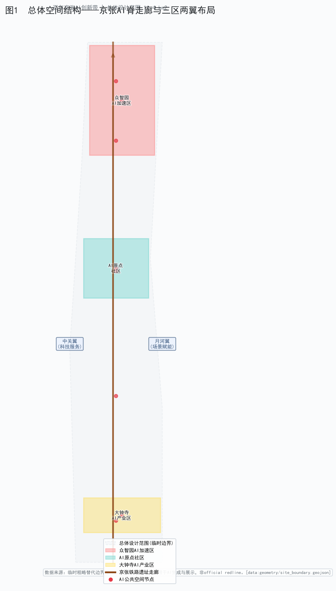
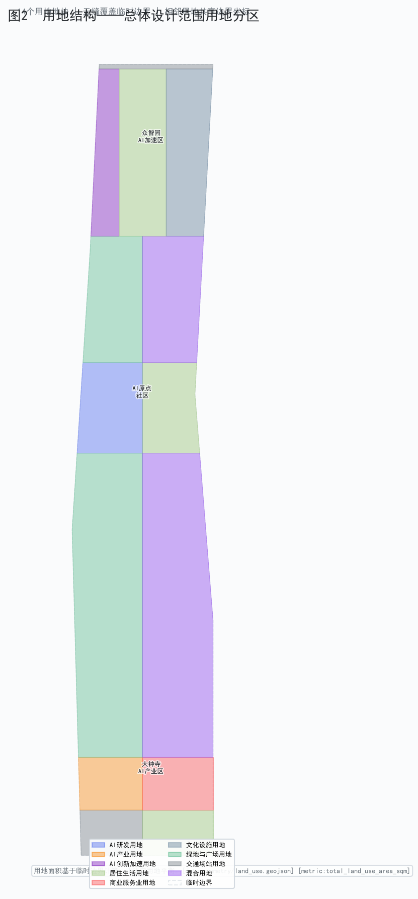
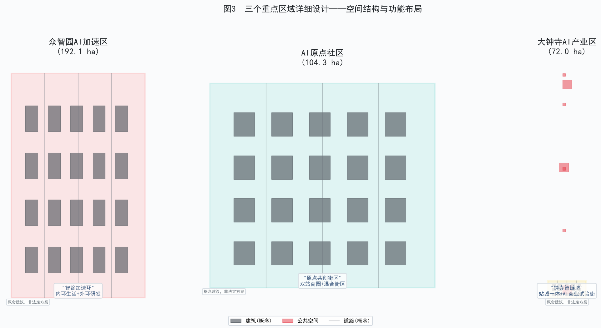
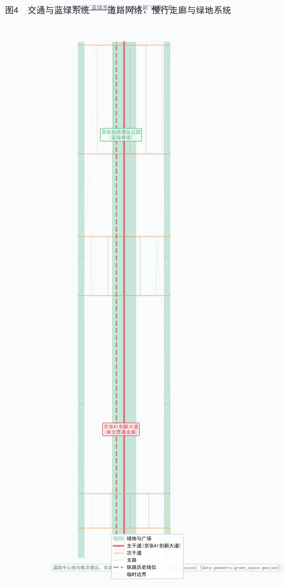
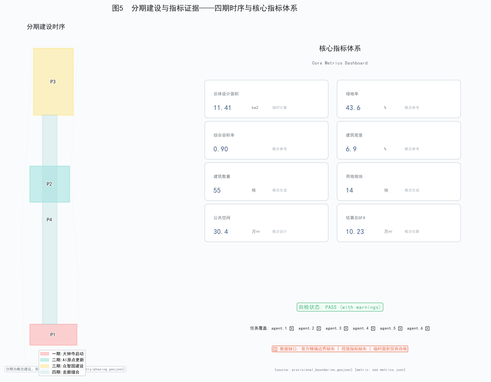

| 检查项 | 状态 | 说明 |
|---|---|---|
| proposal.md 存在且完整 | PASS | 18个章节全部覆盖 |
| 9个GeoJSON文件 | PASS | site/key/land/buildings/roads/green/public/constraints/phasing |
| 用地覆盖边界 | PASS | 用地面积 = 边界面积 (无缝覆盖) |
| 合规矩阵 | PASS | agent.1-6 全部covered |
| 设计深度矩阵 | PASS | 18项全部complete |
| 临时边界已标注 | PASS | 所有几何标注为provisional |
| 证据引用标签 | PASS | [source:] [depth:] [data:] [metric:] 存在 |
| 5张图件 | PASS | 5张PNG已生成 |
| PDF文件 | WARN | A3/A0 PDF待生成 |
| 翻译文件 | WARN | 非阻断式，不影响提交 |





| 编号 | 类别 | 假设 | 置信度 |
|---|---|---|---|
| ASM-001 | boundary | 临时粗略边界作为场地边界 | medium |
| ASM-002 | planning_control | 容积率/高度/绿地率为概念参考值 | low |
| ASM-003 | building_layout | 建筑足迹为网格布局概念生成 | low |
| ASM-004 | land_use | 用地分区遵循南北功能梯度 | medium |
| ASM-005 | road_network | 路网沿铁路走廊布置 | low |
| ASM-006 | green_space | 绿地含铁路遗址公园走廊和防护绿带 | low |
| ASM-007 | phasing | 南向北分期(大钟寺先启动) | low |
| ASM-008 | ai_ecosystem | AI生态案例基于公开知识 | medium |
| ASM-009 | cultural | 京张铁路遗产为核心文化主线 | high |
| ASM-010 | floor_height | 平均层高假定3.5m | low |
| 缺口 | 影响 | 缓解 |
|---|---|---|
| 官方精确边界缺失 | 面积计算为临时值 | 临时边界已标注; 待官方入库后重算 |
| 控规指标缺失(容积率/高度/密度/绿地率/退线) | 所有规划指标为概念参考 | 明确标注非法定; 须以官方控规为准 |
| 官方标准文件缺失 | 标准回应为概念方向 | 标注needs_official_file; 待官方文件入库 |
| 建筑/地块实测数据缺失 | 建筑布局为概念生成 | 标注low confidence; 须专业团队深化 |